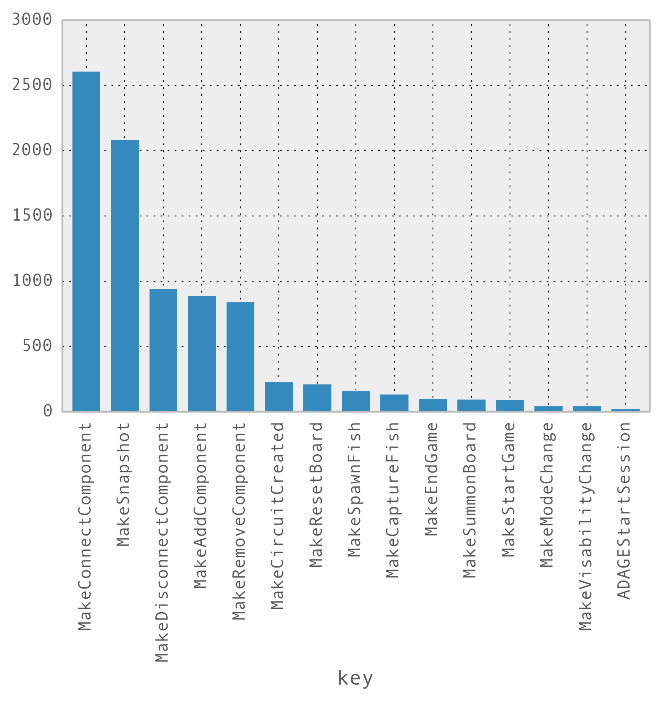

One of the first questions I had for our data was:
First, I'm going to show the Python code I used to get a table of event counts by type. Then, I'm going to explain why the code looks the way it does. (Also, please note that I am not a perfect programmer, so this may not be the best way, but it is a way.)
ms.groupby('key').count().sort(columns=['timestamp'], ascending=False)[timestamp]
| key | timestamp |
|---|---|
| MakeConnectComponent | 2609 |
| MakeSnapshot | 2086 |
| MakeDisconnectComponent | 943 |
| MakeAddComponent | 891 |
| MakeRemoveComponent | 840 |
| MakeCircuitCreated | 229 |
| MakeResetBoard | 211 |
| MakeSpawnFish | 161 |
| MakeCaptureFish | 136 |
| MakeEndGame | 100 |
| MakeSummonBoard | 96 |
| MakeStartGame | 92 |
| MakeModeChange | 45 |
| MakeVisabilityChange | 43 |
| ADAGEStartSession | 23 |
Two things to note here. First, in the table above the numbers are counts. It's slightly confusing because the column title you'll get in output will be timestamp in our case, but what pandas is reporting is the number of timestamp events that match each key type in the left-hand column.
Second, I'm using a pattern of programming called method chaining, which is a common practice in other programming frameworks such as d3. In short, ms is a dataframe object, when I call methods on it, those methods may return other objects which also have methods I might want to call in sequence. So, the groupby() function takes ms as input, returns a grouped dataframe, and passes that grouped dataframe as input to .count(). Another way of thinking of method chaining is that a.b().c() can be understand as the function composition $c(b(a))$.
So, let's break down my line of code from left to right:
ms.groupby('key').count().sort(columns=['timestamp'], ascending=False)[timestamp]
ms - take the ms dataframe, thengroupby('key') - group its data by key, thencount() - count the number of data items in each group, thensort() the data, in descending order, according to the count in the timestamp column, and finally[timestamp] selects just the timestamp columnIt seems like one big ol' line of code, but it's actually a complex stepwise procedure that I got to express in a compact way because of method chaining.
Now, if we'd prefer to visualize our data, we can actually do so quite easily. Here, we'll make a bar chart of the types of events in our data and how many of each type are in the dataset:
msdata = ms.groupby('key').count().sort(columns=['timestamp', 'key'], ascending=False)
p = msdata['timestamp'].plot(kind='bar')
print(p)

A big one. Continue on to the next section to see why this bar chart is bad news.